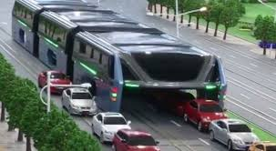
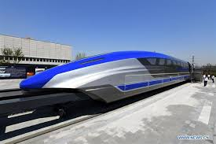

|
  
|
CITY'S TRANSPORTATION SYSTEMPrasinada city is well connected to the outer world as well as maintains its own sacredism at the same time. This is due to the fact that Prasinada has a system of two circles namely the inner circle and the outer circle. Due to this, the city can be easily sealed if needed since unlike many cities, it has only seven entrances. This can especially be helpful during the time of an epidemic when communication with the rest of the world has to be terminated. Many times ambulances, which may be carrying or receiving a critical patient, get stuck in traffic. So to ensure that everyone gets free and instant ambulance services, the city has been laid with binary electric lines. On these lines run the ‘Elevated Ambulance’. These ambulances rise about 20 feet above ground which is higher than the mammoth double-decker buses that run on the streets of London. These ambulances can prove to be very crucial in life-death situations. Prasinada promotes the use of hydrogen vehicles which ensures zero carbon emission. The fuel cell of the car generates electricity by converting the chemical energy obtained from the oxidation-reduction reaction of hydrogen with oxygen. Buses that run in the city are also dependent on hydrogen-based energy The city is equipped with maglev trains that are very swift and efficient when it comes to short distances as well as long-distance travel. These maglev trains use the Meissner Effect, which states that some superconductive elements would not allow magnetic fields to penetrate through their bulk. This effect causes magnetic levitation. Maglev trains can achieve a maximum velocity of 600 km/h or 375 mph. These trains save a lot of time and cause zero carbon emission. |